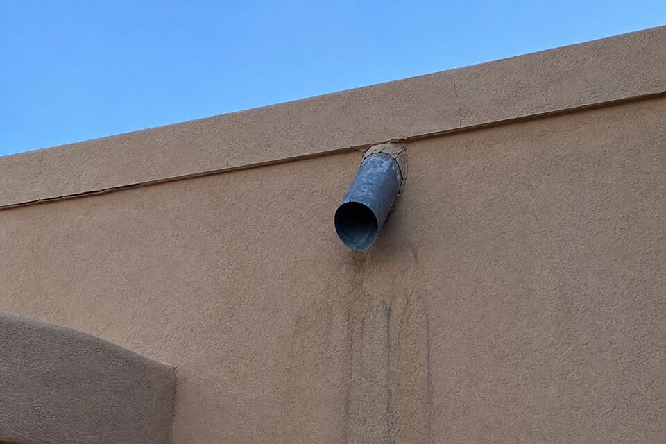

Parapet & Canale Repair in Santa Fe
Flat-roofed Santa Fe architecture puts a low stucco wall — the parapet — around every roof, and drains the roof through canales punched past it. It is beautiful, it is the look of the city, and it is where stucco fails first: parapet tops take weather from three sides, and every canale is a managed hole in a wall. Most “mystery” wall stains start up here.

Why parapets fail first
A wall sheds water down its face; a parapet also catches it on top. Cap cracks open under sun and freeze-thaw, water enters the wall core, and winter does the rest — by spring the stucco on both faces is cracking, staining, or spalling from the inside out. Because the parapet sits where nobody looks closely, the first symptom most owners notice is a stain blooming on the living-room wall below. Reading parapets is the first stop of nearly every repair visit on a flat-roofed home.
Canales: small drains, big consequences
Each canale concentrates a roof’s worth of monsoon through one spout — past flashing that must stay perfect where it meets the stucco. When that flashing fails or the canale back-pitches, water runs the wall instead of clearing it, and the streak below a canale becomes the most recognizable stain in Santa Fe. Repair ranges from resealing and re-flashing to re-setting the canale with proper slope and splash clearance — paired with rebuilding whatever stucco the leak already claimed.
The repair, done in the right order
Water first, stucco second. Caps get repaired or rebuilt (and where a wall keeps eating caps, a metal coping cap is the honest upgrade), flashing gets corrected, and only then do the stucco faces get cut back, dried, and rebuilt — otherwise the new stucco inherits the old leak. Where the failure crosses into roofing membrane, you hear that plainly and early; pretending a roof problem is a stucco problem serves nobody.
The five-minute fall ritual
Before the first freeze, walk the house and look up: crumbling cap edges, streaks under canales, hairlines radiating from parapet corners. Ten minutes of looking in October routinely saves a wall by April — and any of those findings is a complete first message to send through the form.
Streak under a canale or a crumbling cap?
That is the wall asking early. Send the form with what you see from the ground — no ladder required on your end.
Questions people ask
Is the stain below my canale a roof problem or a stucco problem?
Usually a flashing problem — the seam where canale meets wall — which sits between trades. The visit follows the water and tells you plainly whose repair it is; when it is roofing membrane, you hear that instead of a stucco patch that won't hold.
Should my parapet get a metal cap?
When a parapet keeps cracking its stucco cap, a metal coping cap ends the cycle — it sheds water and moves with temperature in ways stucco tops cannot. It is an upgrade conversation, offered where the history says it pays.
How urgent is a cracked parapet before winter?
More than it looks — a parapet crack feeds freeze-thaw from the top of the wall down. Pre-winter cap sealing is the cheapest work on this page; the spring version involves rebuilding stucco.